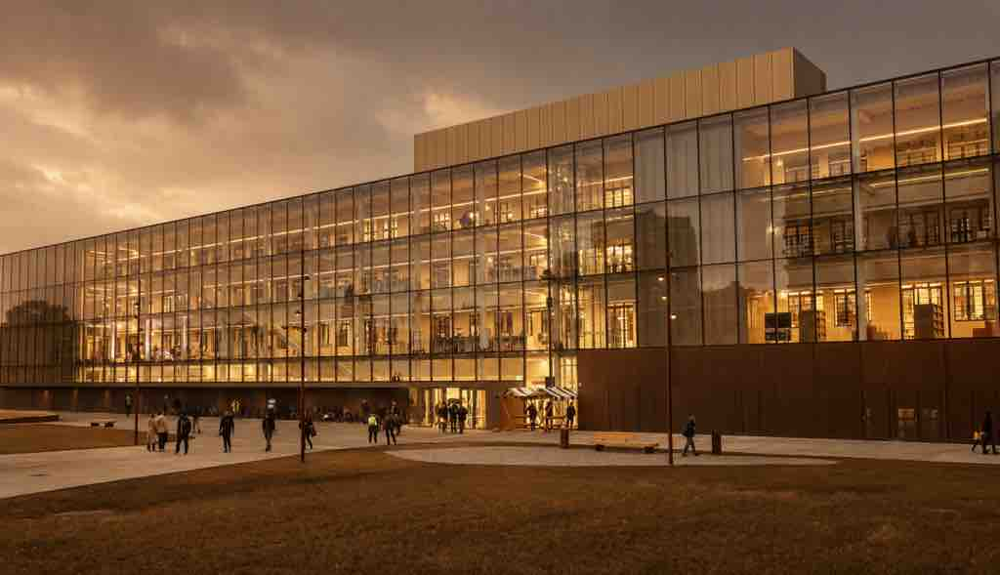
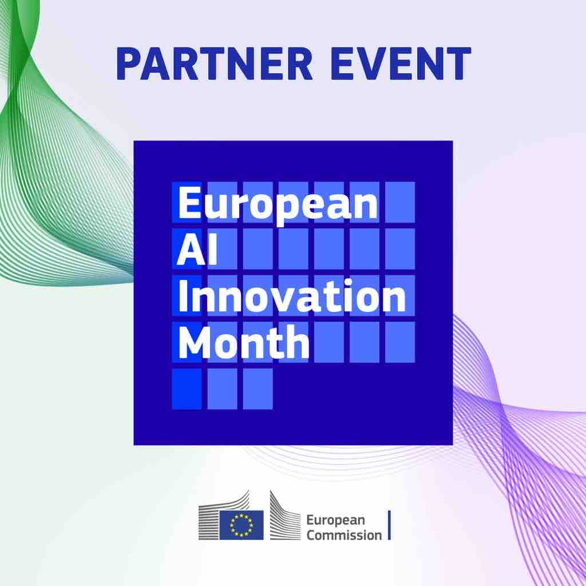

AI WEEK 2026: Tri dni idej, znanja, tehnologije in prihodnosti

Umetna inteligenca (AI) je v zadnjih letih iz nišne tehnološke teme postala eno najpomembnejših gonil gospodarskega, družbenega in političnega razvoja po vsem svetu. Od avtomatizacije poslovnih procesov, generativnih modelov in strojnega učenja, do etičnih vprašanj in regulative – umetna inteligenca danes oblikuje način, kako podjetja poslujejo, kako država upravlja javne storitve in kako posamezniki dojemajo prihodnost dela. V tem kontekstu Zavod AI-D novembra 2026 organizira AI WEEK – tridnevni dogodek, ki bo Slovenijo postavil v središče evropskega dogajanja na področju umetne inteligence.
Kaj je AI WEEK 2026?
AI WEEK je nov, celovito zasnovan dogodek, namenjen vsem, ki jih zanima umetna inteligenca – od odločevalcev v javnem sektorju, raziskovalcev in akademikov, do podjetnikov, startupov, marketinških in IT strokovnjakov ter širše zainteresirane javnosti. Dogodek poteka v okviru EU AI Innovation Month, kar pomeni, da bo Ljubljana ta teden del vseevropskega vala dogodkov, posvečenih umetni inteligenci, njenemu razvoju in odgovorni uporabi.
- Termin: 3., 4. in 5. november 2026
- Lokacija: Center Rog, Ljubljana
- Cena: 499 EUR + DDV (tretji dan je brezplačen)
Zavod AI-D je dogodek zasnoval tako, da vsak dan naslavlja drugo plat umetne inteligence – od vizije in strategije, prek poslovne implementacije, do praktičnih izkušenj in povezovanja skupnosti. Tak pristop omogoča, da si udeleženci ustvarijo celostno sliko o tem, kaj umetna inteligenca danes že omogoča in kam se razvija.

Zakaj je umetna inteligenca danes ključna tema za Slovenijo
Umetna inteligenca ni več zgolj tehnološki trend, temveč strateško vprašanje konkurenčnosti gospodarstev in držav. Evropska unija z različnimi pobudami, med njimi tudi z AI Act in evropskimi smernicami za zaupanja vredno umetno inteligenco, poskuša najti ravnovesje med spodbujanjem inovacij in zaščito državljanov. Slovenija se v tem procesu sooča z enakimi izzivi kot druge evropske države: kako pospešiti digitalizacijo javnega sektorja, kako podjetjem omogočiti hitro in varno implementacijo AI orodij, ter kako vzgojiti kadre, ki bodo znali umetno inteligenco uporabljati odgovorno in učinkovito.
Prav zato dogodki, kot je AI WEEK, pridobivajo na pomenu – ne le kot prostor za izmenjavo znanja, temveč kot platforma, kjer se srečujejo država, gospodarstvo, akademska sfera in civilna družba, da skupaj oblikujejo prihodnost umetne inteligence pri nas.
Program AI WEEK 2026: trije dnevi, tri različne perspektive umetne inteligence
DAN 1 – THINK: Vizija, strategija in regulativa umetne inteligence
Prvi dan AI WEEK je namenjen razmisleku o širši sliki umetne inteligence. V ospredju bodo teme, kot so vizija in strategija razvoja AI na nacionalni in evropski ravni, regulativa in zakonodaja, vloga javnega sektorja pri digitalizaciji, etična vprašanja umetne inteligence ter evropske smernice, ki oblikujejo prihodnost tehnologije. Govorili bomo o tem, kako politika in država sooblikujeta okvir, znotraj katerega se umetna inteligenca lahko razvija odgovorno in trajnostno, ter kakšno vlogo pri tem igrajo univerze in raziskovalne institucije.
Ta dan je namenjen predvsem odločevalcem, oblikovalcem politik, raziskovalcem in vsem, ki jih zanima, kam umetna inteligenca vodi Slovenijo in Evropo v naslednjem desetletju.
dr. Polona Štefančič, dr. Verica Trstenjak, Marko Grobelnik (IJS), Igor Žorga (AKOS), Boštjan Koritnik (ljubljanski podžupan), Jan Lebanc (Dunaj), Marko Štefančič (KCUI), dr. Slavko Žitnik (FRI), …
DAN 2 – BUILD: Umetna inteligenca kot poslovno orodje
Drugi dan AI WEEK je namenjen praktični, poslovni plati umetne inteligence. Osredotočili se bomo na to, kako AI danes že spreminja poslovanje podjetij – od startupov do uveljavljenih korporacij. Teme dneva vključujejo poslovno rast z umetno inteligenco, avtomatizacijo procesov, donosnost naložb (ROI) pri uvajanju AI rešitev, inovacije in implementacijo AI orodij v vsakdanje poslovanje. Posebna pozornost bo namenjena tudi področjem, kjer umetna inteligenca prinaša največji konkurenčni preboj – marketingu, prodaji, kadrovanju (HR) in IT sektorju.
Ta dan je idejen za podjetnike, startupe, vodje podjetij, marketinške in prodajne strokovnjake ter vse, ki iščejo konkretne odgovore na vprašanje, kako umetno inteligenco spremeniti v merljivo poslovno vrednost in produktivnost.
Ken Okel (ameriški avtor, govorec, poslovnež), Tomaž Valjevec (Microsoft), Matjaž Možina (2Mobile), Igor Verstovšek (Cosylab), Primož Inkret in Greg Evseev (Prosecco 37), AI HUB (Tehnološki park), Janja Božič Marolt (Mediana), Igor Razbornik, …
DAN 3 – EXPERIENCE: Umetna inteligenca v praksi (brezplačna udeležba)
Tretji dan AI WEEK je namenjen izkušnji umetne inteligence na terenu – in je, za razliko od prvih dveh dni, brezplačen. Udeleženci bodo lahko obiskali demonstracije, showcase dogodke, odprte laboratorije (open house) in podjetja, ki umetno inteligenco že aktivno uporabljajo. Na sporedu so ekskurzije, ogledi lokacij, delavnice in predstavitve prototipov, ki bodo obiskovalcem omogočili neposreden vpogled v to, kako umetna inteligenca deluje v realnem poslovnem in raziskovalnem okolju. Dan bo obenem tudi priložnost za networking in povezovanje z drugimi člani slovenske AI skupnosti.
Ivo Grlica, …
VEČER 3. DNE – CELEBRATION: Zaključni slavnostni večer
AI WEEK se bo zaključil s slavnostnim večerom, na katerem bodo podeljene nagrade najboljšim projektom in posameznikom na področju umetne inteligence, predstavljen bo nov strokovni svet, sledil pa bo tudi zaključni govor. Večer bo namenjen povezovanju slovenske AI skupnosti, druženju ob glasbi in praznovanju dosežkov na področju umetne inteligence v Sloveniji.
Komu je AI WEEK namenjen?
AI WEEK 2026 je zasnovan izjemno široko in nagovarja praktično vse deležnike, ki jih zanima umetna inteligenca:
- Odločevalce v javnem sektorju – ki oblikujejo strategijo, regulativo in digitalizacijo države.
- Raziskovalce in akademike – ki razvijajo nova znanja na področju umetne inteligence.
- Podjetnike in startupe – ki iščejo priložnosti za rast z uporabo AI orodij.
- Marketinške, prodajne in HR strokovnjake – ki želijo razumeti, kako umetna inteligenca spreminja njihovo panogo.
- IT strokovnjake – ki AI rešitve implementirajo v praksi.
- Širšo javnost – ki jo zanima, kako umetna inteligenca vpliva na vsakdanje življenje.
Zakaj se udeležiti AI WEEK 2026
Umetna inteligenca se razvija hitreje kot kadarkoli prej, in dogodki, ki združujejo vizijo, poslovno prakso in neposredno izkušnjo, so danes redkost. AI WEEK 2026, ki ga organizira Zavod AI-D, ponuja ravno to – celovit pogled na umetno inteligenco skozi tri različne perspektive, v okviru vseevropskega dogajanja EU AI Innovation Month. Dogodek bo potekal v Centru Rog v Ljubljani, enem najbolj prepoznavnih inovacijskih in ustvarjalnih središč v Sloveniji, kar dodatno poudarja povezavo med tehnologijo, inovativnostjo in skupnostjo.
Ne glede na to, ali vas zanima regulativa in prihodnost umetne inteligence v javnem sektorju, poslovne priložnosti, ki jih prinaša AI, ali preprosto želite na lastne oči videti, kako umetna inteligenca deluje v praksi – AI WEEK 2026 vam ponuja odgovore.
Rezervirajte si termin: 3.–5. november 2026, Center Rog, Ljubljana. Cena udeležbe za prva dva dneva znaša 499 EUR + DDV, tretji dan (EXPERIENCE) pa je brezplačen za vse, ki jih zanima umetna inteligenca v praksi.